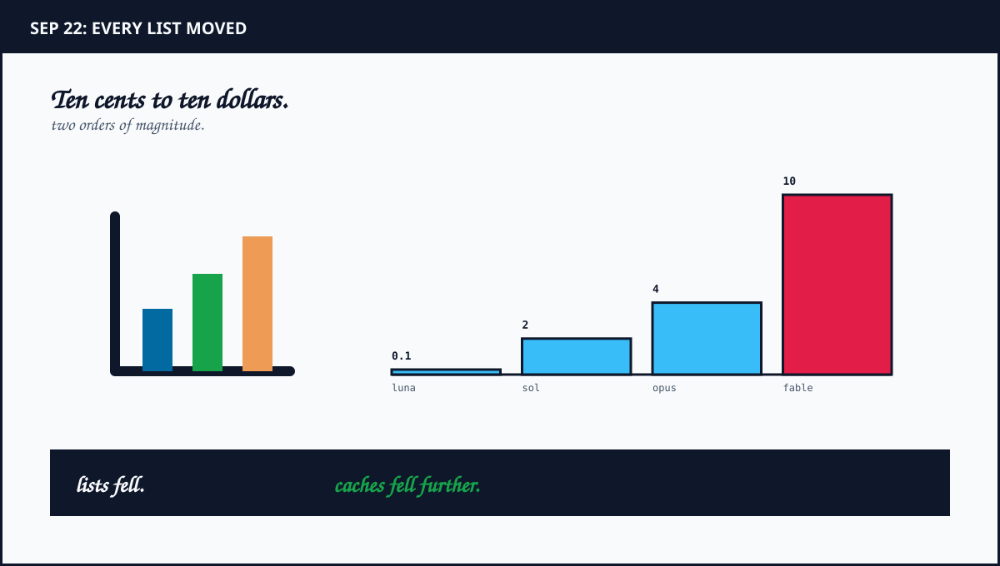
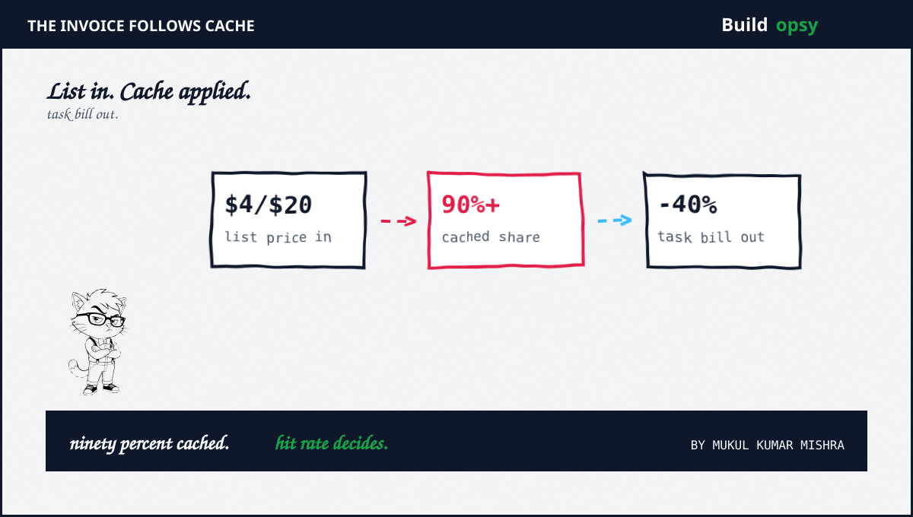

1. What happened on September 22
Anthropic opened with Claude Opus 5.5, first of the 5.5 family plus first release since the pace-the-frontier call. Input $4 per million plus output $20, down from $5 plus $25. Cache reads $0.20, down from $0.50. Terminal-Bench 4.0 at 66.4 percent against 52.3 for Opus 5. GDPval at 1846 Elo. Output over 30 percent faster. Context one million plus max output 128K unchanged. Thinking stays always on with effort as the only control.
About an hour later OpenAI answered with GPT-6 Sol at $2 plus $10 plus GPT-6 Luna at $0.10 plus $0.50. Both roughly half their GPT-5.6 equivalents. GPT-5.6 carries a scheduled 25 percent hike in November, which makes the GPT-6 cut deeper than half against future prices. Grok 4.7 had priced at $2 plus $6 the previous day, an undercut that survived barely twenty four hours before matching Sol on input.
Six days later Anthropic extended the family. Sonnet 5.5 shipped Sep 28 at Sonnet 5 prices, $2 plus $10, while writing over 30 percent faster plus scoring 70.6 on Terminal-Bench 4.0, ahead of Opus 5.5 at 66.4. Haiku 5.5 follows in the coming weeks. The pattern is set. Mid tiers absorb flagship scores while flagships chase efficiency.
2. The table both vendors published
- GPT-6 Luna: $0.10 input plus $0.01 cached plus $0.50 output per million. The batch tier for everything cheap.
- GPT-6 Sol: $2 input plus $0.20 cached plus $10 output per million. Half of GPT-5.6 Sol across the row.
- Claude Opus 5.5: $4 input plus $0.20 cached plus $20 output per million. Twenty percent list cut plus sixty percent cache read cut.
- Claude Fable 5.1 plus GPT-6 Astra: $10 input plus $50 output per million. The frontier ceiling both vendors kept.
Two details hide in the rows. Opus 5.5 fast mode bills double at $8 plus $40 for faster output, down from $10 plus $50 on Opus 5. It runs only on the Anthropic provider with no batch combination. Cache writes cost $5 for five minutes plus $8 for one hour. LiteLLM shipped day-zero support with cost tracking, which tells you how fast proxies had to move. Pricing landed in a config reload, not a migration.
Benchmarks frame the value, with the usual vendor caution. Opus 5.5 leads Terminal-Bench 4.0 plus FrontierCode plus OSWorld computer use. Astra answers on Terminal-Bench-Science at 64.6 against 58.7. Anthropic itself warns that margins at this capability level guide less than they appear to. Scores rent attention. Bills arrive monthly regardless.

3. Why cache reads decide the bill
Long agentic conversations process 90 percent plus of input tokens at cached rates. System prompts plus repo context plus tool schemas repeat every turn. Only the newest tokens bill at list. A twenty percent list cut applied to ten percent of tokens moves the total two percent. A sixty percent cache read cut applied to ninety percent moves it fifty four. The second number is the story. The first is the headline.
Opus 5.5 compounds the cut with fewer tokens per task. Anthropic reports roughly 40 percent lower run cost against Opus 5 after both effects. That matches independent tracking. Day-zero proxy docs confirm the shape. Faster output plus leaner traces plus cheaper cache reads multiply instead of adding.
Sonnet 5.5 is the paradox that proves the model. Same list prices as Sonnet 5. Higher scores plus faster writes plus fewer tokens per task. The per-task bill falls with no price change at all. Any team routing on list price alone keeps sending work to Opus while Sonnet clears the same bar at half the line rate. Routing tables need benchmark plus token-efficiency columns, not price columns.
4. The bill hides in the boundary
Assumptions are explicit. Model a one million task month with a 70-20-10 split across Luna class, Sonnet class, plus Opus class workloads. Price the agent loop at 90 percent cached input plus modest output per task. Numbers below size routing policy, not any invoice. Swap in your hit rates before spending.
Model the routing in three tiers. Bulk classification plus extraction plus evals go to Luna class at ten cents list with penny cache reads. Interactive coding plus review go to Sonnet class where the 5.5 generation wins on speed plus score per dollar. Reserve Opus class plus frontier ceiling models for tasks that demonstrably fail one tier down, measured by retry cost rather than prestige. Fast mode stays off unless latency SLAs price it in explicitly.
Estimate the order of savings. Moving repeatable agent loops from list-rate Opus budgeting to cached Sonnet execution cuts the line by more than half before any vendor discount. Batch eligible offline work halves again at fifty percent off where supported. Compare that against single-tier routing where every task bills at flagship rates plus retries re-bill full price. The price war handed you cheaper tokens. The cache math hands you fewer of them. Take both.
For the prefill plus decode plus batching method behind this math, see my inference cost per task teardown plus size retry policy with my agent retry cost calculator. Different pages. Same missing guard. Cost needs method plus meter plus routing proof.
5. The verdict: route per task, not per token
Both vendors disclosed fast with prices plus benchmarks plus availability across clouds on day one. That candor helps buyers. The record still shows list prices doing the talking while cache rates do the billing. Teams that renegotiate tiers without remeasuring hit rates will celebrate the headline plus miss the invoice.
For an infrastructure review, ask for the per-tier hit rate plus tokens per task plus retry share plus the routing table with promotion criteria. Re-run the table after every model drop. September moved three lists in a day. The next move lands without warning. The bill hides in the boundary between list price plus cached reality.
Until routing follows measured task cost, the safest budget is the one recomputed monthly. Price the task. Meter the cache. Promote on proof.
Frequently Asked Questions
What changed in frontier model pricing on September 22 2026?
Anthropic launched Claude Opus 5.5 at $4 input plus $20 output per million tokens, down 20 percent from Opus 5. About an hour later OpenAI launched GPT-6 Sol plus Luna at roughly half their GPT-5.6 equivalents.
Why do cache read prices matter more than list prices?
Long agentic runs process 90 percent plus of input tokens at cached rates. Opus 5.5 cache reads fell 60 percent to $0.20 per million, so the effective per-task bill drops faster than the 20 percent list cut.
What is the Sonnet 5.5 paradox?
Sonnet 5.5 kept Sonnet 5 list prices while beating Opus 5.5 on Terminal-Bench 4.0 plus writing 30 percent faster. Same price plus fewer tokens per task means a lower bill without a price cut.
Sources and Method
Prices plus dates plus scores follow Anthropic plus OpenAI announcements Sep 22 plus independent tracking below. Sonnet 5.5 details follow Sep 28 to 29 coverage. Per-task math is modeled with stated assumptions. For method see my inference cost per task teardown.
- Anthropic: Introducing Claude Opus 5.5 With Pricing Plus Benchmarks (Sep 22 2026)
- Simon Willison: Claude Opus 5.5 Plus GPT-6 Sol Plus Luna Plus a New Price War (Sep 22 2026)
- Mashable: Anthropic Launches Claude Opus 5.5 at Lower Price (Sep 22 2026)
- LiteLLM: Day Zero Support for Claude Opus 5.5 With Pricing Notes (Sep 22 2026)
- Believemy: Claude Sonnet 5.5 Nears Opus at Half Price (Sep 29 2026)